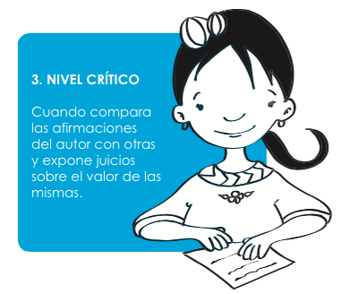

Nivel crítico
Para este nivel de lectura, es necesario que tomes los elementos formales, los relaciones con el contenido del texto y formes un concepto propio sobre tus descubrimientos en el texto.
Lee atentamente el siguiente fragmento:
“Regaba afrecho al pie del naranjo; ponía en el reguero una batea recostada sobre un palito; de este amarraba una larga cabuya cuyo extremo cogía, yendo a esconderse tras una mata de caña a esperar que bajara el “pinche” a comer... Bajaba el pobre, y no bien había picoteado, cuando Frutos tiraba, y ¡zas!...”